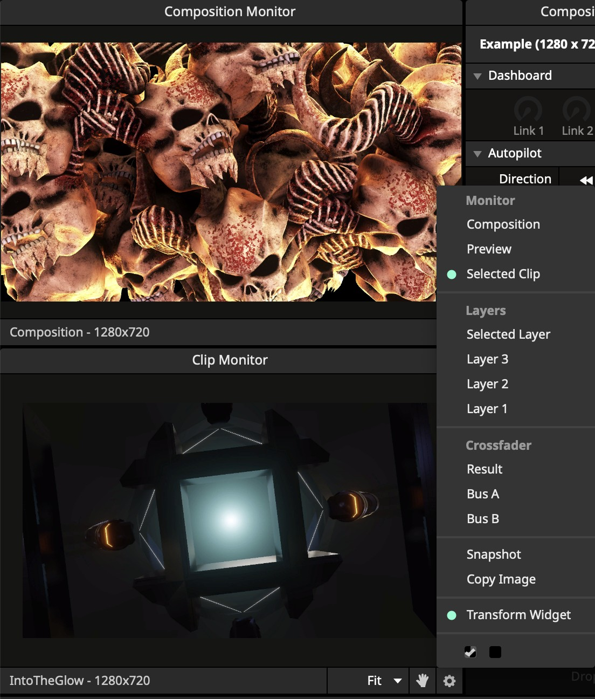
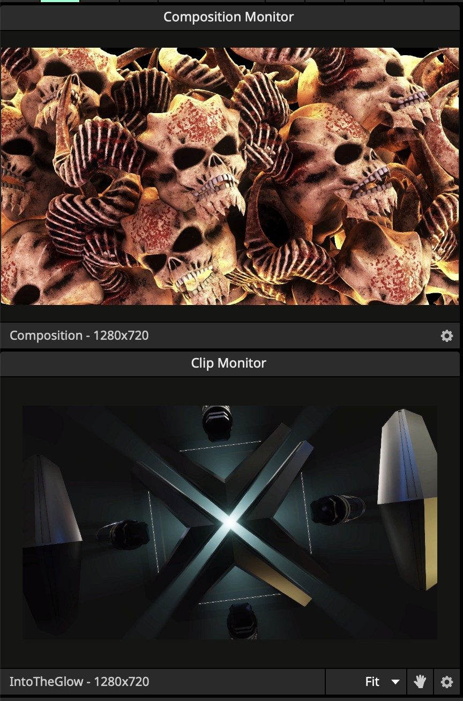
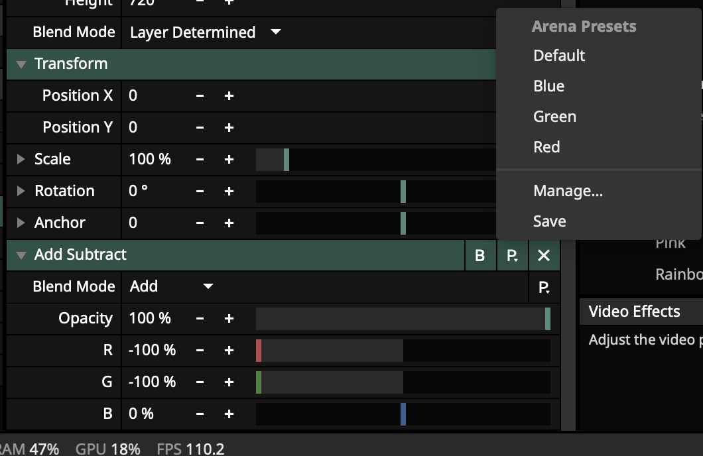
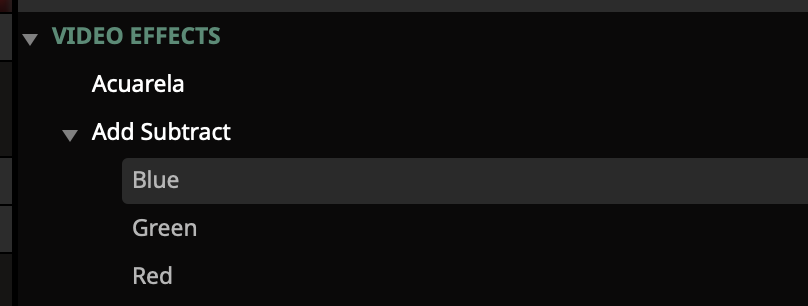
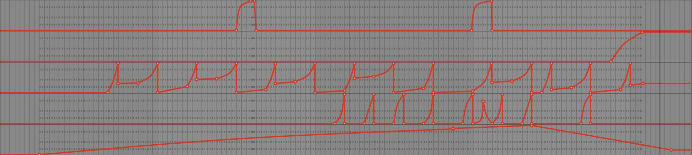

Audio-DNA — getting on the same page
2026-10-05 15:23 · session s-rta-1005
1 What this page is
This page puts us on the same page before anything is built: first what I understood from your answers of today (the readings), then the questions your answers open.
You wrote: "ask me questions about anything that is unclear when you are ready" -- this page is that.
Nothing is being built. Your words: "Don’t build anything till all questions are answered and you are 100% sure of what everything means." and "Let’s get on the same page first with questions and answers."
How to answer a question: its number and a letter, for example "172 a". This time silence is not an answer: a question you do not answer stays open, and nothing that depends on it is built. If you want every default, one line is enough: "all defaults good".
How to answer the readings: correct the ones that are wrong (a sentence, or where a reading offers it a short word such as "R130 off"). When the rest are right, write "readings ok".
A reading says how it will work once it is built. Only a sentence that says "today" describes the app as it is now. Where a reading says "Mine:", what follows is my own addition, not your words and not Resolume's: look at those first.
Where you said to emulate Resolume, the reading begins "As in Resolume" and says in its own words whether Resolume's manual states it or I worked it out.
It is long: 47 readings and 17 questions. If you answer only some at first, these hold up the most building: 172 to 175 (the tempo row), 178 (presets), 180, 181 and 182 (actions).
Where things sit and how they look is not asked here: it comes next as pictures (the list is near the end).
2 What I understood from your answers -- correct only what is wrong
A Firing clips and the tempo row
- R128REVISEDabout 154
A clip in BPM mode that you fire in the middle of a bar starts playing on the next "1" (the first beat of the next bar), by itself. A clip that is not in BPM mode starts on your press. Once this is built there is no Snap box on a clip and no Quantize setting for firing clips live (the review screen has its own Quantize, R166). In Resolume the wait is a separate setting, Beat Snap; in your app BPM mode itself does it: your words. Mine: fire the clip that is already playing and it plays on, then starts again from its beginning on the next "1"; a click on a column starts its BPM-mode clips on the next "1" and the others on your click. What the layer shows while the clip waits: question 173.
Changed: Adds the re-fire and the column (mine); the open point became question 173.
- R168NEWabout 154: while a clip waits
Mine, no word of yours covers it: while a BPM-mode clip waits for the "1", a newer fire on the same layer takes its place (the last press wins). The layer's X, or a click on an empty cell, ends the wait and clears the layer at once, in the middle of a bar too: an empty cell has no BPM mode, so it does not wait. Press the waiting clip again and nothing changes: it keeps waiting for the same "1". If the old clip plays on meanwhile (173 A), the layer's fade to the new clip starts on the "1".
- R139REVISEDabout R111
Your sentence has two halves. STOPPED: you fire a clip and the beat starts ("it starts playing the beat"). Mine: your press is the "1"; the clip plays from its beginning; any clip does this, in BPM mode or not, fired by a click, a key, a MIDI pad or a column; a click on an empty cell starts nothing; play and Resync still start the beat too. PAUSED: a clip you fire shows and does not play ("it will not play but will still display"). Mine: it stands on its first frame; when you press play the beat runs on from where it was held, and a BPM-mode clip starts on the next "1" (your 154); when the beat was held at its start, your play press is that "1". This replaces the old R111. How this goes with your show start: question 172. While the beat runs, whether a waiting clip is seen: question 173. A clip that is not in BPM mode under pause: question 174. What tempo the very first fire runs at: question 175.
Changed: Splits your sentence into its stopped half and its paused half, and marks what I added.
- R140REVISEDabout show start
Your show-start sentence, as I read it: "press start" is the play button of the tempo row; "load up the clips" is firing them while the beat does not run, so that they stand ready; the column is the other way to start them all at once; "cue them ahead of time" is looking at them in the preview monitor first (R149 says how). Whether I read it right: question 172.
Changed: Now says how I read each part of your sentence.
- R142REVISEDabout R114
As you said: a clip you paused is still paused after you save the show, quit and open it again. That pause is saved (it was already ruled so, your 122 a).
Changed: Now in your own words; the tempo row's part is in R163.
- R163NEWabout R114: the beat when the app or a show opens
When the app starts, the beat is stopped and waits for you. Opening a show never changes the beat: stopped stays stopped, running keeps running, and the tempo number stays as it is. As today, a show holds no tempo number and nothing of the tempo row's play, pause or stop. It does hold its /2 and x2 setting (today already) and, as you ruled, its nudge amount (your 63). The action buttons open as you saved them (R132), but no action plays until the beat runs (R158).
- R169NEWabout the tempo row with Ableton Link on
As in Resolume (a reply of its team from 2023, not its manual): with Ableton Link switched on, the tempo row's pause and Resync are greyed out, because they would move the beat that the other programs share. Mine: play is greyed out too; a fire never starts or moves the beat, because the beat is Link's and always runs; stop still takes the clips off the layers and leaves the beat running. Link is off unless you switch it on.
- R164NEWabout the DJ tracks
The three DJ tracks you are bringing are for measuring how well the app finds the "1" in real music. One part of the BPM-mode work waits for them; nothing on this page does.
- R148NEWabout R120: the name
Your name for it: the keyboard and MIDI mapping. Today the menu is titled "Shortcuts"; its entries read "Edit Keyboard Shortcuts...", "Edit MIDI Mappings...", "Stop All", "Export Bindings..." and "Import Bindings..."; the two screens they open are headed "Keyboard Binding Mode — Click a target, then press a key" and "MIDI Learn Mode — Click a target, then send MIDI"; the two file windows are titled "Export Bindings" and "Import Bindings". From now on all of it is called "keyboard and MIDI mapping": in everything I write to you from today, and in the app when that part is next built. The words "shortcuts", "bindings" and "MIDI learn" go; the exact new wording of each entry comes with the pictures. The app's own notes also say "mapping" for plugging a signal into a slider, so this one is always written in full.
B The cue system
R141REVISEDabout cue systemA preview monitor sits just below the output monitor. Under it, one cue button per layer; any number of them can be on. The layers switched on there show in the preview mixed together, with their blend modes, in layer order, as they would mix in the output (with or without the global effects: question 177). Nothing you do there ever changes the output. This part is yours and not Resolume's: in its monitor menu you pick one layer or one group at a time (your picture: one green dot); a Resolume reply of 2015 says previewing several layers together is not possible, and I found nothing newer. A click on a clip's name: R150 and R151.
Changed: Adds that several cue buttons can be on at once and that the output is never touched.

click: full size- R149NEWabout cue system: the fader
A cued layer shows in the preview at full strength wherever its fader is, the way a DJ hears a cued track with the channel fader down (Resolume's layer monitor does the same: worked out from two replies of its team, not stated in its manual). You see the layer's clip with the clip's effects and the layer's effects. Mine: the layer's B (bypass) and S (solo) buttons do not change what the preview shows, only the cue buttons do (what Resolume does there is not known); the cued layers are mixed among themselves only, the lowest one drawn as it is and the others blended onto it, so one cued layer alone shows its own picture whatever its blend mode; a cued layer that is empty adds nothing. This is how you cue ahead of time: faders down, fire the clips or the column, cue the layers, look, then bring the faders up.
- R150NEWabout cue system: name and thumbnail
As in Resolume (its manual says so): a click on a clip's name selects the clip without firing it, so the Clip tab shows its settings and you can change them before it is live; a click on its thumbnail fires it. The app already works this way today. New: the name click also shows the clip in the preview monitor (as Resolume's own video shows). One thing goes: today a name click on a picture or a procedural clip can also put it on the main picture, and so on the outputs, while nothing is playing (read in the code, not seen running). A name click will only select and preview.
- R151NEWabout cue system: a previewed clip
As in Resolume (worked out from its old manual and from its users; its present manual has no sentence on it): a clip you preview by its name plays in the preview monitor, it is not a still, with its own effects and at full strength; previewing never fires it and never changes the output. Mine: it starts from its beginning and loops, and a BPM-mode clip follows the tempo there too; a clip that is playing in the output at that moment shows in the preview at the same moment of its playback, because it is the same clip seen twice.
- R152NEWabout cue system: the buttons
Mine, no word of yours covers it: the cue buttons belong to the night, not to the show. They are not saved, and the app opens with none on. With none on and no clip previewed, the preview monitor shows black. A cue button can be put on a key or a MIDI pad in the keyboard and MIDI mapping: you chose that for action buttons (166 A), and I assume the same for cue buttons. A recording never keeps a cue press, and an action never presses one.
R153NEWabout cue system: the namesNames: in your Resolume pictures the two monitors are titled "Composition Monitor" and "Clip Monitor"; "Preview" is one entry in a monitor's menu (I take it to be the lower one's: its green dot is on "Selected Clip"). In your app they are the output monitor and the preview monitor, your words. Today's panel has two small buttons at its top, "Preview" and "Output", that only change colour and show the same picture: they go. Mine: nothing else of Resolume's monitor menu (Selected Clip, Crossfader, Snapshot, Copy Image, Transform Widget) is copied; your cue buttons take its place.

click: full size- R170NEWabout cue system: what Resolume can do and the first build does not
As in Resolume (its manual says both): a monitor can be undocked into a window of its own and dragged onto a second screen, and a file can be previewed from the Files tab by a double-click. Your words ask for a preview monitor below the output monitor, and for the click on a clip's name "to preview clips before adding them to the layer strip", which I read as: before firing them. So in the first build the preview monitor is in the main window only, and it shows cued layers and clips that are in the clip grid, not files in the Files tab. Say so if you want either of the two in the first build.
C Presets
R136REVISEDabout 169, presetsAs in Resolume: (a) on an effect you read the effect's name, as today (your picture and its manual). (b) At the right end of that same row there is a small "P" with an arrow, between B (bypass) and X (remove). I take it to be the effect's preset button: the open menu in your picture hangs right above it, and Resolume's manual speaks of "the Preset drop down above the effect parameters". Its drop-down reads: Default, your presets, a line, "Manage...", "Save". (c) In the effects tab (it reads "FX" on screen today) an effect that has presets gets a fold arrow and its presets are listed under it (its manual says so); an effect with none shows no arrow in your picture. What the button reads: question 178.
Changed: Adds where the button sits, which effects get an arrow, and what of it I worked out.

click: full size- R127REVISEDabout 150: the small Save button
The small Save button of your answer 150: it shows beside the preset button the moment the effect's sliders no longer match its preset, and goes away when they match again. It shows on an effect that reads "Default" and never had a preset too: your answer 150 was about exactly that effect, so nearly every effect you touch will carry it. That sets aside your 133 ("no need to show that it was changed") for this one button; the preset's name itself still stays after a change and gets no mark (whether a name is shown at all: question 178). Press the button: a small window asks for a name and already holds the next free one ("Preset 3"; your 104). Press Save: a NEW preset is kept under that name. Type the name of a preset that exists: the window asks first, then saves over it (your 103 and 132). Say so if you want the Save button only on effects that carry one of your own presets.
Changed: Adds the window's starting name, what an existing name does, and the Save button on a "Default" effect.
R154NEWabout presets: dragging oneAs in Resolume (its manual says so): you drag a preset from the effects tab onto a clip, a layer or the global stack, the same way as the effect itself. Worked out, not stated in its manual: the effect arrives under its own name, set to the preset's values, and dragging the effect itself brings it at its defaults. Mine: a click on a preset in the tab only selects it for dragging, and a double-click does nothing in the first build (what Resolume does there is not known); a preset you drop is always added as a new effect and never changes an effect that is already there.

click: full size- R155NEWabout presets: Save and Manage...
As in Resolume (worked out: its manual says that "Save" opens a window where you type a name, and shows "Manage..." for its other preset menus, not for effects): in the drop-down, "Save" does the same as the small Save button (R127), and "Manage..." opens a small window that lists this effect's presets, where you rename or delete one. Mine, and only if the effect remembers its preset (178 A or C): Rename = every effect of the open show that carries the preset reads the new name, and so does the effects tab; Delete = those effects read "Default", keep their settings (and so show the Save button), and the preset leaves the tab. "Default" is always first in the drop-down, puts the effect back to its defaults, and is not listed in the tab.
- R171NEWabout presets: a preset that is not on this computer
Mine (it takes the place of the note in the old R121), and only if the effect remembers its preset (178 A or C): when the preset an effect carries is not on this computer (the show was opened on another computer, or the preset was renamed or deleted while this show was closed), the effect keeps its settings and reads "Default". The show still keeps the name: on a computer that has that preset the effect reads it again. One thing to know: if you later make a new preset under that same name, such an effect will read it as its own.
R156NEWabout presets: what is not copiedTwo things in your picture I do NOT copy unless you say so: the second small "P" at the end of the "Blend Mode" row (in Resolume that appears to be a preset menu for that one row), and the menu's title "Arena Presets" (Resolume's own name on its menu; your app ships no presets of its own, your 101).
click: full size- R157NEWabout presets: what stays
From your words: presets are kept with the app on this computer, not inside a show ("these are saved with the app. always."); a preset holds each slider's value, Dry / Wet, and the signal plugged into each slider (your 102 b). My plan, not yet told to you: loading a preset is one Undo step; the show keeps the name of the preset an effect carries (only if the effect remembers it, question 178).
D Actions in a show
- R133REVISEDabout 163
As you said: clip actions and layer actions are saved separately. A clip action holds only that clip's sliders and buttons (its effects included) under one on / off button. A layer action holds the layer tab's sliders and buttons and the clip fires on that layer. A clip fired by a layer action plays its own actions. A global action holds the global tab's sliders and buttons, any layer's sliders and buttons, and clip fires on any layer (your words: "the global controls all sliders and buttons in the global tab, and all the layer"); a clip's own sliders never go into it, they are saved as that clip's action. Mine: when you tick rows of more than one kind, the review screen splits them by these rules and shows you the list before it saves. One case is yours to pick: question 179.
Changed: Now in your own words; adds what a global action holds, also in your words.
- R134REVISEDabout 164
Eight action buttons are shown for a clip, eight for a layer, sixteen for global; each row ends in a "+" that opens the rest. Mine: the row shows the first eight (or sixteen) in the order you made them, and you can change that order. Where the three rows sit on screen comes next as pictures: today a clip's cell is narrow, the row above the clip grid sits over columns and not over single clips, and the layer strip is almost full.
Changed: Adds which eight are shown, and why the place needs pictures.
- R172NEWabout what an action does when it starts
Mine, from your words that actions "are just automations": an action moves only the rows you ticked when you made it. From its first moment each of those controls takes the action's value: a control that was somewhere else jumps there on the "1". A ticked row that did not move in the recording holds its control at that one value for as long as the action is on. Controls that are not in the action stay where they are. This is what your older word "restore" (said for routines) becomes: you choose what is put back by ticking its row, and there is no separate restore switch. Say so if you want a glide instead of a jump.
- R158NEWabout 157 a + 154 + R123: one timing rule
One timing rule for every action (its length in beats and the tempo: R144): it starts from its beginning on a "1" and loops. A clip in BPM mode: clip and action start together on the "1". A clip not in BPM mode: the picture starts on your press, its action on the next "1" (157 A). Mine: a layer's or a global action that you switch on, or a clip's action that you switch on while the clip already plays, also starts from its beginning on the next "1". Beat stopped: no action plays; your fire starts the beat, that press is the "1", and the actions that are on start with it. Beat paused: every action holds still, also on a clip that plays on. A clip you paused yourself: its actions stop moving its sliders, and when it plays again they are back in step with the beat, not shifted. What a stop does to actions that were playing: question 180.
- R144AS FILEDabout R123
An action's length is counted in beats and it follows the tempo: a faster tempo plays it faster, so its grid lines sit on the live bars. An action still never presses the tempo row's buttons.
- R159NEWabout 168 + R123: an action's length
Mine: an action can be any whole number of grid steps long. One that is not a whole number of bars (say 5 beats) still starts on a "1", but drifts against the bars as it loops. The review screen shows the length in bars and beats before you save, and does not forbid it.
- R129REVISEDabout 159 b
Switch an action off: every slider and button it moved goes back to where it was just before any action took hold of it (mine: at once, a jump). Three cases follow from your other answers. (1) Another action that is still on moves the same slider: that one takes the slider (your 160 a); it goes back only when the last one is off. (2) A hand move never lasts on a slider that an action is moving: when you let go it jumps to the action (158 A), and when the action goes off it goes back to the value from before the action. To keep your own value on it, light its ignore lamp (R131). (3) A clip's action that ends because its clip stops or is replaced: the same, back to before, so the clip looks the same the next time you fire it. Say so if (2) is not what you want.
Changed: Adds which wins when 159 b, 160 a and 158 A pull one slider three ways.
- R130REVISEDabout 160
Two actions of one clip that move the same slider can both be on: the one switched on last moves it (your 160 a). You wrote: "the first one that is conflicted that is switched off". I read that as: the first one is overridden on that slider, not switched off, because you chose "a" and not "b" (b was: switching the second one on switches the first one off). So the earlier one keeps moving its other sliders, and its button carries a light that means "another action holds something of mine". Switch the later one off: the earlier one takes the slider again and the light goes out. Mine: the same light shows on a layer's action while a global action holds it back (R160). If you meant that the first one's button really goes off, say "R130 off". How the light looks comes as a picture.
Changed: Quotes your sentence and says how I read it, and why.
- R131REVISEDabout 161
The lamp beside every slider and every button is a toggle: click = that control ignores ALL its actions (lamp lit: the control is yours); click again = it follows them (lamp dark). Mine: while it ignores, no action moves it, switching an action off does not move it back, and it stays where you put it. Click it back to follow while an action is on and the control jumps to where the action is by now (as when your hand lets go, 158 A). A control that ignores is still recorded and still has its row in the review screen. Controls that no action can ever move (the tempo row, the cue buttons) get no lamp. Where the lamp sits on each row, and on the layer strip, which is almost full, comes as pictures.
Changed: Adds what a control does at the moment it starts or stops ignoring.
- R132REVISEDabout 162 b
The show remembers which controls are set to ignore (your 162 b). Mine: it also remembers which actions were switched on, so a show opens with its action buttons as you saved them; and a slider that an action is moving is saved at the value you had set (the value from before the action), never at the action's moving value.
Changed: Adds the action buttons and the saved value of a slider that an action is moving.
- R160NEWabout 155 a + 156 a + 159 b: global over layer
You wrote: "when the global is triggered the layer action is turned off", and that the transition slider sets how fast to go "to the global action settings from the layer settings" and the time "when going back to layer actions from global". I read "turned off" as held back, not switched off: the layers' action buttons stay on (with the light of R130), nothing jumps back to before, and the sliders glide from where the layer's action had them to the global's settings over the transition time. Global OFF: the layers' actions come back in step with the beat (156 A) and the sliders glide to them over the same time; a slider that only the global moved glides back to where it was before. The clips' own actions play on throughout (155 A). Mine: a clip fire inside a global action cuts at once; only slider values glide. If you meant that the layers' actions are really switched off (their sliders go back as in 159 b, and you switch them on again yourself), say "R160 off". What the transition slider counts: question 183.
- R161NEWabout a layer's X, a clip change, a deck switch
Mine, from your 143 a and your words that a clip's actions play when the clip plays: a layer's X takes its clip off, and the clip's actions end with it. The same when one clip replaces another on a layer: the old clip's actions end, and the new clip's actions start if they are switched on. The layer's own actions after an X follow your answer to question 180: with A or C they stay on and keep running with the beat, because they belong to the layer; with B the X switches them off. Switching decks changes nothing for actions: the layers and their clips play on.
- R145REVISEDabout delete, copy, cut, paste
An action can be deleted, copied, cut and pasted. Mine: a plain click on its button still only switches it on or off, so selecting needs its own gesture: a right-click marks the action and opens a menu with Rename, Copy, Cut, Paste and Delete. The Mac's own keys then work on the marked action: Cmd+C, Cmd+X, Cmd+V (your words say ctrl; on a Mac these keys are on Cmd) and the Delete key. Only one thing is marked at a time: marking an action unselects the clip cells, and selecting a clip cell unmarks the action. With clip cells selected, Cmd+X clears those clips, as it does today (there is no copy or paste of clips today, and none is added by this). Cut = copy, and the action leaves its owner at once. Delete, cut and paste are Undo steps, so Delete does not ask first.
Changed: Adds the selecting gesture, what cut is, the keys while clip cells are selected, and Undo.
- R162NEWabout paste
Mine: paste puts a copy onto the clip, the layer or the global row you paste on (right-click that row of action buttons and choose Paste, or select a clip by its name and press Cmd+V). A clip's action goes only onto a clip, a layer's only onto a layer, a global one stays global. The pasted action arrives switched off, under the same name. A clip that lacks an effect the action moves: question 184. Copy, paste and "save without ignored controls" (R146) only repeat or trim an action that exists; the review screen is still the only place where an action is made from a recording (your 141 a).
- R146REVISEDabout save without the ignored controls
You wrote: "Also, user can save an option with the ignore action items not in it." In the sentence before it, "option" is an entry of the right-click menu ("a copy and delete option"), so I read it as: the action's right-click menu also has an entry that saves the action without the controls that are set to ignore, so that the saved action no longer moves them. If you meant something else, tell me in a line. What exactly that entry does: question 185.
Changed: Says how I read your word "option", and why.
- R143REVISEDabout R117
Routines are replaced by actions outright: nothing is carried over and no in-between state is protected. R116 and R117 fall away. What that means for your files: your show still opens as it does today; its routines are dropped (your one saved show has none) and so are its saved Snap numbers; recordings made before the actions build are not brought into the review screen. One thing stays because it is part of the app: every save of your show file is read back before it replaces the old file, and a file in an old format is copied to the backups folder before it is written over.
Changed: Adds what it means for your show file, and how the protection of the show file really works.
- R147REVISEDabout defaults and the readings that stand
The nine questions you did not name are at their defaults by your line "All defaults good except for these."; each is written out in words in the last block of this page. Eight readings of the last page were not corrected by you, so they stand: R112 stop is a cut, the clips go at once, no fade; R113 stop is not an Undo step; R115 Resync while the beat is stopped or paused: your press is the "1", the beat runs from it and the nudge reads 0, and tapping a tempo while stopped changes the number and starts nothing; R119 the tempo row's cells are as tall as the top bar is today, a little smaller than Resolume's; R122 a clip fired by a layer's or a global action plays its own actions too; R124 a recording will keep everything you move with the mouse as well: sliders, the layer strip's buttons, a preset you load; R125 a clip's actions belong to the clip and move with it; R126 your show "test with harry" holds no routine, so nothing of yours is lost when the routine pads go. R110 now reads: a recording is replayed in the review screen. R109 (what stop does to actions) became question 180.
Changed: Each standing reading is now said in words; R109 became question 180.
E The review screen and recordings
- R138REVISEDabout 170
The review screen is a screen of its own, not the live window: the picture at the top, one track per slider or button below it. While it plays, the stop button, the spacebar, or a mouse press inside a track stops it and changes nothing else. A click in a track also moves the picture and the timeline to that moment; a drag scrubs both together. Mine: it does not start playing again by itself (the spacebar or play does that, from where you are); the recording's sound plays while it plays and is silent while you scrub; the tempo row is not part of this screen.
Changed: Joins your two sentences into one rule; adds the restart and the sound.
- R165NEWabout 170: opening the review screen
Mine: the review screen is a place for after the show. Opening it is like a press on stop for the live show: the clips leave the layers and the beat stops (it asks first if clips are playing). Closing it brings you back to the live window with your show as it was, nothing playing: reviewing and mending a recording never changes a slider, a button or a clip of your show. What the outputs show meanwhile: question 186.
- R173NEWabout which show a recording belongs to
Mine: a recording remembers the show it was made in, and it is reviewed with that show open (if another show is open, the app says which one to open). The review uses the show as it is now: a row of a clip or an effect that you have since removed is marked missing and cannot be ticked. An action you save there goes into that show (your One Save).
- R137REVISEDabout 169, the review screen
Your 169 is neither of the two letters I offered. The review screen has a row for every slider and every button that can be adjusted, moved or not (I had filed it as "A"; A said only the ones that moved). A preset loaded during the recording shows as a jump at one moment on each of its sliders' rows; before the jump each row shows the value it had. Mine: the row of a control that never moved is a flat line at its value; an action made from there stores the numbers and never the preset's name, so if you change the preset later the action does not change; ticking the name of a clip, a layer or an effect ticks all its rows. Which clips and layers get rows: question 188.
Changed: Corrected to your words: a row for EVERY control, moved or not.
- R135REVISEDabout 168
In and Out can sit only on grid lines. You can change the grid's size; you cannot switch the snap off. Mine: the grid steps are 4 bars, 2 bars, 1 bar, half a bar, 1 beat, half a beat and a quarter beat. Say so if you want other sizes.
Changed: Adds the list of grid sizes.
- R166NEWabout Quantize in the review screen
Mine, from your words on what Quantize is for: in the review screen, Quantize moves button presses and clip fires onto the nearest grid line; it does not reshape a slider's curve. In and Out use the same grid. A Quantize is an Undo step.
- R167NEWabout rows that cannot be ticked
Mine: the tempo and the deck changes of the night are shown in the review screen (the bars are its grid), but they cannot be ticked into an action: an action never touches the tempo row (R123) and never switches decks.
3 Questions
A Firing clips and the tempo row
172.R111 and the show start
A show is about to start. The beat is stopped and the layers are empty. You want three clips, one on each of three layers, to start together on the first beat of the music.
ADEFAULT Press pause first: the beat is held at its start. Each clip you fire now shows on its first frame and waits. Press play on the first beat: that press is the "1" and all of them start. Or skip that and click a column.Why this is the default: It is your two sentences read together: stopped, a fire starts the beat; paused, a clip you fire shows and does not play. So "load up the clips and press start" is the paused way, and the column is the stopped way.B Clips never wait: from stop, the first clip you fire starts the beat and plays; to start several together you click a column. Here "load up the clips" means filling the clip grid, and "press start" starts the beat with nothing playing yet.Why it matters: It decides how every show of yours begins, and the tempo row is built on it. With A, a clip that is not in BPM mode waits too only if you answer 174 A. Either way you can also start with the faders down and bring them up (R149).
YOUR WORDSR111 if I fire a clip while the beat is stopped, it starts playing the beat. When paused, it will not play but will still display.
The way to set up / cue up for a show start is to load up the clips and press start, or click on a column to trigger all of them at the same time and cue them ahead of time via the cue system which I am about to describe.
173.154: what the layer shows while a clip waits
The beat is running. A clip plays on layer 2. Half-way through a bar you fire another clip of layer 2 that is in BPM mode.
ADEFAULT The old clip plays on until the "1"; then the new one takes over and starts. On an empty layer nothing shows until the "1". The new clip's cell shows that it is waiting.Why this is the default: As in Resolume when a clip waits for the bar (its manual: "at the start of the next bar, the output will change to play the new clip"), and your own word for it is quantization.B The new clip shows at once, standing on its first frame, and starts moving on the "1". The old clip is gone at your press.Why it matters: With B the audience sees a frozen picture for up to a bar each time you fire a BPM-mode clip; with A they keep seeing the old clip (or nothing) until the "1".
YOUR WORDS154 a clip that has BPM mode enabled will start playing on the next 1 if it is triggered in the middle of a bar. This is automatic quantization that is implied when the clip has BPM mode.
174.R111 (paused) against 136 b
The beat is paused. You fire a clip that is NOT in BPM mode.
ADEFAULT It shows, standing on its first frame, and plays when the beat plays: while the beat is paused nothing you fire moves, whatever its mode. This is your sentence as written.Why this is the default: Closest to your words: your reply to R111 names no mode ("When paused, it will not play but will still display."), and it took the place of a text of mine that said such a clip plays at once.B It plays at once. Pause holds only the clips in BPM mode (your 136 b): a clip that is not in BPM mode and was already playing plays on through the pause anyway.Why it matters: Your answer 136 b means: a pause holds the BPM-mode clips, and a clip that is not in BPM mode plays on. With A, such a clip plays on if it was already playing but waits if you fire it during the pause. With B you cannot stand it ready for a show start (question 172).
YOUR WORDSR111 if I fire a clip while the beat is stopped, it starts playing the beat. When paused, it will not play but will still display.
136 b
175.R111: the tempo of the first fire
You have just opened the app. No music has played yet and you have not tapped or typed a tempo, so the app has no tempo number. You fire a clip.
ADEFAULT The tempo number is never empty: the app opens at the tempo you used last (120 the very first time). Your fire starts the beat at that number; the music, a tap or a typed number then corrects it.Why this is the default: Least surprise, and your own rule for a stopped beat: "the beat stops but tempo is not lost, just not playing".B No tempo, no beat: the tempo row shows no number until the app finds the tempo in the music or you tap or type one. Until then a BPM-mode clip you fire shows on its first frame and waits; other clips play.Why it matters: It decides what the first press of every night does. Today the app has no tempo until it has heard enough music (read in the code).
YOUR WORDS135 the beat stops but tempo is not lost, just not playing
B The cue system
176.cue system: a clip's name
Layers 1 and 2 are cued and show mixed in the preview monitor. You click the name of a clip of layer 3, to look at it before you fire it.
ADEFAULT The clip takes the whole preview monitor, alone. The cued layers come back when you fire any clip, press a cue button, or click that name again.Why this is the default: As in Resolume: a previewed clip is shown outside the composition (its own video says so), and the clip preview is cleared when a clip is fired by hand (a reply of its team, 2018). Coming back by a cue button or by the name is mine.B The clip is shown inside the cued mix, as if it were already playing on layer 3: you see how it will look together with layers 1 and 2.Why it matters: A shows the clip by itself. B shows the mix you are about to make, which is your DJ picture, but it is not what Resolume does.
YOUR WORDSAlso, when a user clicks on the bottom of a clip, where its name is, it is displayed in the preview monitor. I want this behavior as well to preview clips before adding them to the layer strip.
exactly how a DJ mixer allows the user to cue and listen to how the tracks would be mixed together before they mix them
click: full size177.cue system: global effects
You have effects on in the global tab, and you cue two layers.
ADEFAULT The preview shows the cued layers with their own clip effects and layer effects, mixed. The global tab's effects are not on it: you see the layers before the global effects are added.Why this is the default: A DJ's cue is taken before the master; Resolume's layer monitor also appears to leave the composition's effects out (worked out; not stated in its manual).B The preview runs the cued mix through the global tab's effects too, so that it looks the way it would on the output.Why it matters: With A the preview can look different from what the audience will get when your global effects are strong. With B the preview costs more to draw, and trails and echo effects can only be approximated in it.
YOUR WORDSexactly how a DJ mixer allows the user to cue and listen to how the tracks would be mixed together before they mix them
click: full sizeC Presets
178.150 and 169: the preset button
You put an effect on a clip and load your preset "Blue" on it. Look at the small preset button at the right end of the effect's name row.
ADEFAULT It reads the preset's name, "Blue", with a small arrow ("Default" when none is loaded). The effect remembers which preset it carries, and the name stays after you change a slider.Why this is the default: Your "150 a is good" (the button keeps reading its name) and your words "the preset name area".B Exactly as in Resolume: a small "P" with an arrow and no name anywhere. The effect does not remember which preset it came from. The small Save button shows whenever its sliders match none of its presets.C A "P" with an arrow, as in your picture, but the effect still remembers its preset: the drop-down marks it, and the small Save button shows when a slider leaves it.Why it matters: Your picture and your answer 150 cannot both be taken to the letter: Resolume shows no preset name on an effect, and its manual says an effect does not remember which preset it was set from. If you pick B, everything in R155, R157 and R171 about an effect that "carries" a preset falls away, and Rename and Delete change only the list.
YOUR WORDS150 a is good, but as soon as the preset is changed, we have a little button to save this preset, as soon as the button is pushed, the user gets a little window to give the preset a name and Push save
In that placement the other presets can be selected by clicking a button with a drop down menu in the preset name area just above the effect parameters.
Please emulate this.
click: full sizeD Actions in a show
179.163: rows of more than one layer
In the review screen you tick the faders of layer 1 and layer 2 (one fades out while the other fades in) and nothing of the global tab. You press save.
ADEFAULT One global action holds both faders under one button. Like every global action, it holds back the layers' own actions while it is on.Why this is the default: By your words only a global action reaches more than one layer ("the global controls all sliders and buttons in the global tab, and all the layer"), and the two faders stay together under one button.B Two layer actions, one for layer 1 and one for layer 2, each with its own button; the list shows you both before it saves. No other action is held back, but you switch on two buttons.Why it matters: It decides what becomes of a move that spans layers, such as a fade from one layer to another. With A it is one button, but it holds back the layers' own actions; with B nothing is held back, but the two halves are switched on one by one.
YOUR WORDS163 the clip actions and layer actions are saved separately.
so the global controls all sliders and buttons in the global tab, and all the layer with it's own actions
180.R109: stop and the actions
Two clip actions and a layer's action are switched on and playing. You press stop on the tempo row: the clips leave the layers and the beat stops.
ADEFAULT Every action stops with the beat and its button stays ON. Sliders stay where they stood (a fader that an action had at 0 stays at 0). When you fire a clip or press play, the actions start again from their beginning on the "1".Why this is the default: An action's button is a switch you set for the show ("If the actions are toggled on all those actions will play when the clip plays in time with the clip."); a stop between two songs should not undo your set-up.B Stop switches every action OFF, and their sliders go back to where they were before (your 159 b). You switch on again the ones you want.C The buttons stay ON as in A, but the sliders go back to where they were before the actions (as in 159 b) until the beat starts again.Why it matters: It decides whether a stop between two songs undoes your set-up of actions. A layer's X follows your answer: with B it also switches that layer's own actions off (R161).
YOUR WORDSIf the actions are toggled on all those actions will play when the clip plays in time with the clip.
159 b
181.an action on a slider that a signal drives
A slider has a signal plugged into it, so the music moves it. An action that is switched on moves the same slider.
ADEFAULT The action wins while it is on, as your hand does while you hold a slider. Switch the action off and the slider goes back to the signal.Why this is the default: It is your rule for the hand, applied to actions: the hand wins while it holds, and on letting go the value goes back to the signal ("smooth transition back.").B The signal keeps the slider: an action never moves a slider that has a signal plugged in. That part of the action is skipped, and the action's button shows the light of R130.Why it matters: The music moving sliders is the heart of the app, and no word of yours says who wins when an action wants the same slider. With A an action can silence the music on a slider; with B it never can.
YOUR WORDSsmooth transition back.
140 a and after I let go it catches up
182.what a layer's or a global action fires
A layer's action fires the clips in columns 1, 3 and 2, in a rhythm. Later you put other clips into those cells, or you switch the clip grid to another deck.
ADEFAULT The action fires the clips it was recorded with, wherever they are now: it follows a clip you move, skips one you deleted, and does not care which deck is shown.Why this is the default: As a clip's own actions follow the clip (R125, which you did not correct); an action never fires a clip that was not in the recording.B The action fires the cells: columns 1, 3 and 2 of that layer in the deck that is shown, whatever clips sit there now. Change the clips or the deck and the same rhythm plays other pictures.Why it matters: It decides whether a layer's or a global action is a set of clips, or a pattern of presses that you can use again on other clips. Today's routines fire the cell of the deck that is shown (B's way).
YOUR WORDS142 a and a layers actions can trigger clips
183.the transition slider: what it counts
A layer's action is moving a fader. You switch on a global action that moves the same fader, and the fader glides over to the global's settings in the time the transition slider sets.
ADEFAULT The transition slider counts seconds, 0 to 4, like the F (fade) slider of a layer.Why this is the default: Your words say it "sets the time", and the layer's own fade slider already counts seconds, 0 to 4.B It counts beats, 0 to 4, so the glide gets shorter when the tempo is faster, like the actions themselves.Why it matters: At 90 BPM and at 170 BPM the same setting in beats gives a very different glide; in seconds it is always the same.
YOUR WORDSThere is a small transition slider that controls how fast to transition to the global action settings from the layer settings as the global and layer actions do some similar things and this same slider sets the time when going back to layer actions from global.
184.paste an action
You copy an action of clip A that moves A's position and two sliders of A's "Ripple" effect. You paste it onto clip B, which has no Ripple.
ADEFAULT The action is pasted with the parts that fit (the position); the Ripple part is left out and the app tells you so. If nothing fits, nothing is pasted.Why this is the default: Least surprise: a paste never adds or changes anything on the clip except the action itself.B The paste also adds Ripple to clip B, set as it is on clip A, so that the action plays whole.C The paste is refused, with a line that says what clip B lacks.Why it matters: Your words give copy and paste, not this case. It decides whether pasting an action can change a clip's effects.
YOUR WORDSWe need to have a way to delete actions. User can right click and have a copy and delete option, and user can select an action and user computer shortcuts like ctrl-c, ctrl-v, ctrl-x.
185.save without the ignored controls
An action moves five sliders. During your shows you have set two of them to ignore, and you want to keep it that way for good.
ADEFAULT In the action's right-click menu, "Save without ignored controls" makes a NEW action that moves only the other three, named after the old one with a number. The old action stays as it was.Why this is the default: Nothing is lost: you described the ignore lamp as the way to keep the action.B The same menu entry changes the action itself: the two sliders are taken out of it for good (Undo brings them back).C Nothing in the menu. It happens in the review screen: when you save a new action there, the rows of controls that are set to ignore are left unticked.Why it matters: A keeps both versions; B keeps your rows of action buttons shorter; C is another way to read your sentence (R146).
YOUR WORDSAlso, user can save an option with the ignore action items not in it.
E The review screen and recordings
186.170: the outputs while you review
After a show you open the review screen while a projector is still connected as an output.
ADEFAULT The outputs go black while the review screen is open. The recording's picture is only in the review screen.Why this is the default: Safest: nothing you scrub or mend can reach an audience by accident.B The outputs show the review picture too, so you can watch a recording on the big screen.C Black, plus a switch in the review screen, "Show on outputs", that you turn on when you want it.Why it matters: Today a recording is played back through the live outputs; your review screen takes the place of that. With A there is no way left to play a whole recording on the outputs.
YOUR WORDS170 the replay window looks different than live window. There will be a screen at the top with the video and the timeline for each parameter below it.
187.170 against 167: scrub or draw
In the review screen you scrub through a recording, and a minute later you want to draw a new shape over one slider's curve (167, the default you accepted). Both are a drag inside a track.
ADEFAULT Two tools, picked by two buttons at the top or by holding a key: the pointer (click = jump, drag = scrub) and the pencil (drag = draw; select a piece and move it). The pointer is on when the screen opens.Why this is the default: It keeps your words of today exactly: with the pointer, a drag inside any track scrubs.B A drag inside a track always draws or moves. Scrubbing and jumping are done in the strip at the top, on the audio track.Why it matters: Your 170 says a drag inside any track scrubs; your words of September and 167 say you draw, and move pieces, inside a track. One drag cannot do both.
YOUR WORDSThe user can scrub the video and timeline by dragging inside any track.
we could just draw rather than drag

click: full size188.169: which rows
Your show "test with harry" has 15 clips on 3 layers: about 400 sliders and buttons by my count, with no effects at all; a show of 48 clips with two effects on each would have about 1,500. In a recording you used four of the clips.
ADEFAULT Rows for everything that was in that recording: each clip that played or that you changed, the layers, and global. Every control of those has a row, moved or not. Clips never fired and never changed have no rows.Why this is the default: It keeps your rule (a flat row for a slider that did not move, so that a preset jump shows) and leaves out only what cannot have changed the picture.B Rows for every control of the whole show, fired or not.Why it matters: It decides how long the list at the left is. Either way the rows are folded under the names of their clip, layer and effect; how that looks comes as pictures.
YOUR WORDSTo answer the question, there is a row in the recording for every parameter and button that can be adjusted.
4 Decided without asking you -- say so if one is wrong
- AOnly you start a stopped beat: your own fire (from the mouse, a key, a MIDI pad or another controller), play, or Resync. The autopilot does not, and a recording played in the review screen does not touch the live beat at all.
- AIf you answer 175 A, the app remembers one number between sessions: the tempo you used last.
- BThe preview monitor is never sent to an output, never recorded, and never reaches Syphon.
- BThe preview picture is smaller than the output and may run less smoothly; the output's smoothness always comes first. Its cost is measured before it is built, and if it costs the output anything you are told first how many frames per second the output loses.
- BA cued layer shows in the preview the same moment as the output: it is the same layer seen twice. One limit of the first build, in the preview only and never in the output: a procedural or MilkDrop clip of the same kind as one that is playing may show the playing one's look in the preview.
- DAn action follows its effect when you re-order a clip's effects. If you remove an effect, the action's rows for it go quiet and the rest of the action plays on.
- DDelete a clip, a layer or a deck and its own actions go with it; Undo brings them back together. What a layer's or a global action does when a clip it fires is moved or deleted: question 182.
- DAn action's recorded tempo is saved inside it, as you asked; it is how the app counts the action in beats. There is no control for it.
- DNo carrying-over is built for old routines or old recordings, and the eight routine pads above the columns go when actions arrive.
- EThe picture in the review screen is made fresh from the recording each time, with the show it was recorded in; it is not a film of the night. So a curve you mend changes the picture you see; the show's clip files must still be on the disk (a missing one is marked as missing); and under a fast scrub a video clip's picture can lag a moment behind the mouse.
- EA recording will keep every slider and button of the clip, layer and global tabs from its first moment, mouse moves included. Today it keeps only part of them (more than half of a clip's controls cannot be kept yet). You will notice it only as time: this is the largest piece of the actions build.
- EA recording keeps what every control did, whoever moved it: your hand, an action that was playing, or a signal. The row of a slider that a signal was driving shows what the slider did that night, with a mark that a signal drove it. So the review picture equals the night, as far as the recording's sound was kept.
- EMending a curve never loses the night: the recording as it was made is kept, and you can go back to it.
- EA row shows its values in the same units as its slider shows them (percent, degrees, a number). You said radians for some; the app's rotation sliders count in degrees, so those rows show degrees.
5 Comes next as pictures
- AA clip's cell while it waits for the "1" or is shown in the preview.
- a small countdown pie on the thumbnail, as Resolume has
- a bar that fills along the name
- a blinking border; a second border colour for the previewed clip
- AThe keyboard and MIDI mapping: the menu's new title and the wording of its entries and of its two screens.
- a menu "Keyboard and MIDI Mapping" with "Edit Keyboard Mapping...", "Edit MIDI Mapping...", "Export Mapping...", "Import Mapping..."
- the same entries under a shorter menu title, "Mapping"
- BThe two monitors: where the preview monitor goes below the output monitor, and how big each is (today the one monitor is the left-most of four panels at the bottom, about a fifth of the width).
- stacked in today's left column, both smaller
- the left column made wider for the two
- the preview monitor foldable, so the output monitor is big when you do not cue
- BThe row of cue buttons under the preview monitor.
- one numbered button per layer, lit when cued
- one button per layer carrying the layer's name
- the same, plus a small picture of each layer
- BThe preview monitor's title line, which says what it shows now, and what it shows when nothing is cued.
- "Preview: layers 1, 2" or "Preview: the clip's name"; black when nothing is cued
- the same, with the words "nothing cued" on the black
- the same, but it shows the output, dimmed, when nothing is cued
- CPresets on an effect: the preset button between B and X, the small Save button, and the name window.
- a button that reads the preset's name, Save button to its left
- a "P" with an arrow, Save button to its left
- the Save button inside the name row, shown only when changed
- CPresets in the effects tab: the fold arrow on an effect and the preset rows under it; and whether the tab keeps reading "FX" or reads "Effects".
- as in your Resolume picture, indented names
- the same with a small dot in the effect's colour
- CThe "Manage..." window. One picture from you would settle its look: Resolume's "Manage..." window, open.
- a list; double-click a name to rename, a Delete button
- a list with a Rename and a Delete button beside each name
- DWhere the action buttons sit: 8 for a clip, 8 for a layer, 16 for global, each row ending in "+" (a cell is 90 points wide; the layer strip has about 8 points free).
- inside each clip's cell, very small
- one row that shows the 8 of the clip you selected
- taller cells with a button row on top; the global 16 in a row of their own above the clip grid
- DThe look of an action's button: on, off, selected, and the light that says another action holds something of it.
- a dot in a corner of the button
- a coloured border
- a dimmed button with a lit edge
- DWhat the "+" opens.
- a list with each action's name and a switch
- a small window with the same row of buttons continued
- DThe ignore lamp beside every slider and every button, the layer strip included.
- a small dot left of each control's name
- a dot at the right end of each row
- on the layer strip: one lamp per control group, because of the room
- lamps always shown, or shown only on controls that an action of the open show moves (the others when you point at them)
- DA slider or a button while an action is moving it.
- a tint on the control
- a small moving dot
- a thin ring around it
- DThe transition slider for global over layer: where it sits.
- beside the global action buttons
- in the global tab
- EThe review screen, its layout: where the picture and the tracks sit.
- the picture across the full width, tracks below
- the picture at the top left with the audio track beside it, tracks below
- EThe review screen, its left side: the names, the hierarchy (clip, layer, global) and the folding.
- every group closed when the screen opens, with a mark on the ones that moved
- the groups that moved open, the rest closed
- EThe review screen, its tools: the pointer and the pencil, In and Out, the grid size, Quantize.
- a tool strip above the tracks
- the tools at the left, under the picture
- EThe review screen, picking and saving: the tick boxes and the Save button.
- a tick box at the left of every row and of every group
- rows picked by a click on their names, and a Save button that counts them
- EHow the review screen is opened and closed.
- a button in the Record tab; it takes over the whole main window, with a Close button
- a window of its own beside the main window (the live show is stopped either way, R165)
- EThe window that saves an action: its name and the list that tells you whether it is global, a layer's or a clip's.
- one line per action that will be made, each with its own name field
- one name, with the details listed under it
6 What I told you in chat
Told to you in the chat on 2026-10-05; repeated here in short and brought up to date (R120 uses your name for it; R121 points to the readings that now carry it). Nothing in this block is asked again.
- R114It is about the live show's tempo row, not about actions. The row's pause and stop are for the whole show; each clip also has its own pause button, and the row never flips it. Your sentence that a clip's own pause is saved: R142. What is not saved is the row's own state (a beat that was paused or stopped): R163.
- R116It was about old files only: an old show's Quantize setting, and an old recording made with Quantize on. It falls away with your words on R117, because nothing saved is in use (R143).
- R120In the keyboard and MIDI mapping, two old entries get longer names so that they are not taken for the new "Beat stop" and "Beat play": "Stop" (it stops routines) becomes "Stop actions", and "Play / Pause" (it plays and pauses the audio file) becomes "Audio play / pause". Names only. The name "keyboard and MIDI mapping" itself: R148.
- R121Where presets stand: nothing is built; it was ruled twice on paper and is now planned again on your two Resolume pictures. What I understood is in the readings R136, R127, R154, R155, R171, R156 and R157. The one point I must ask is question 178.
7 The defaults you accepted
Accepted by your line "All defaults good except for these.": 151 A MilkDrop's list keeps its own word "presets". 155 A a global action on: every layer's actions go off, the clips' own actions keep playing (how I read "off": R160). 156 A the global action off: the layers' actions come back in step with the beat, and the sliders glide there over the transition time. 157 A a clip that is not in BPM mode shows at once; its action waits and starts from its beginning on the next "1". 158 A you let go of a slider that an action is moving: it jumps at once to where the action is by now. 165 A a copied clip has the same actions, each with its own on / off button. 166 A any action's on / off button can be put on a key or a MIDI pad. 167 A in the review screen you can mend a curve: draw a new shape over a row, and select a piece and move it left or right with snap. 171 A the recording and its sound stay in your list after you make an action from it. Answered by you in words or by letter: 150, 154, 159 b, 160, 161, 162 b, 163, 164, 168, 169, 170.